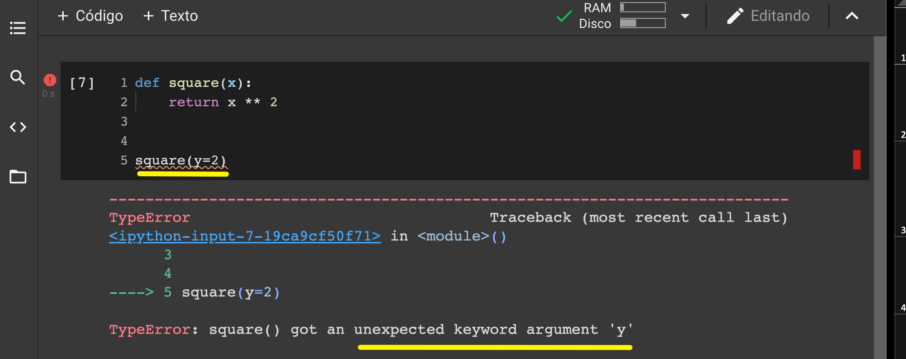
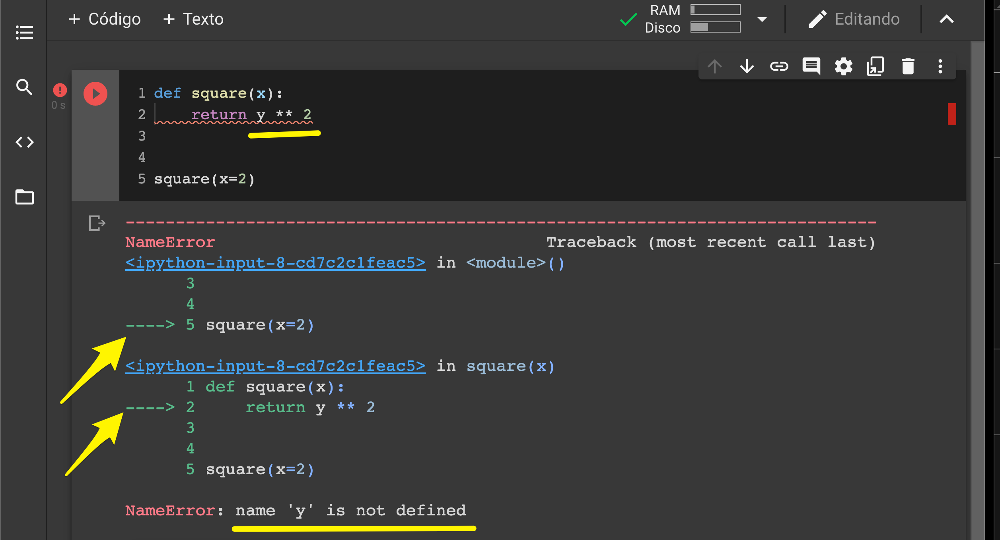
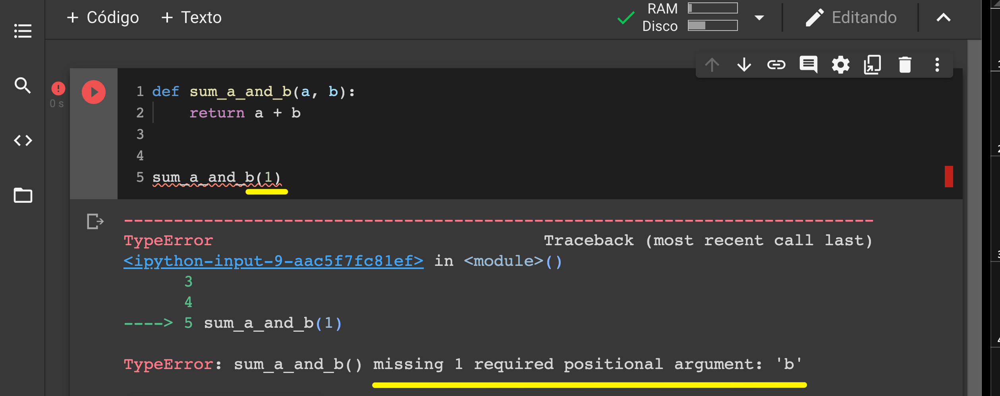

Creación de funciones de usuario — 8:44 min
8:44 min | Última modificación: Octubre 5, 2021 | YouTube
Operación de las funciones internas
[1]:
#
# Ejemplo de funciones internas del lenguaje
# =============================================================================
# La función print() internamente genera
# la salida en pantalla de sus argumentos
#
print("Hola mundo cruel!")
Hola mundo cruel!
[2]:
#
# La función sum() toma una lista y retorna su suma.
#
sum([1, 2, 3, 4, 5, 6])
[2]:
21
[3]:
#
# Abstracción del concepto f(x) = x ** 2
# =============================================================================
#
# x -> argumento de la función
# return -> indica que retorna
#
def square(x):
x_squared = x ** 2
return x_squared
[4]:
#
# Diferencia argumento posicional y nombrado
# =============================================================================
#
display(
square(2),
square(x=2),
)
4
4
[5]:
#
# Las funciones puden ser llamadas dentro de otras
# =============================================================================
#
def sum_of_squares(x, y):
return square(x) + square(y)
[6]:
sum_of_squares(1, 2)
[6]:
5
[7]:
#
# Error causado cuando el argumento no existe
# =============================================================================
#

[8]:
#
# Error causado al usar una variable inexistente
# =============================================================================
#

[9]:
#
# Error causado al llamar la función con un número equivocado de argumentos.
# =============================================================================
#

[10]:
#
# Asignación de los valores de las llamadas a los argumentos de la función.
# =============================================================================
#
def my_function(a, b, c):
print("a:", a)
print("b:", b)
print("c:", c)
my_function(1, 2, 3)
a: 1
b: 2
c: 3
[11]:
#
# Asignación del resultado de una función cuando la función no retorna nada
# =============================================================================
#
def function_returning_nothing(x):
pass
y = function_returning_nothing(1)
display(
y,
type(y),
)
None
NoneType
[12]:
#
# Retorno de varios valores
# =============================================================================
#
def function_returning_a_tuple(x, y):
return x, y
function_returning_a_tuple(1, 2)
[12]:
(1, 2)
[13]:
#
# Se debe verificar que la función siempre retorne un valor
# =============================================================================
#
def comparing_function(x, y):
if x > y:
return True
comparing_function(2, 1)
[13]:
True
[14]:
#
# Esta llamada no retorna un valor
# =============================================================================
#
display(
comparing_function(1, 2),
type(comparing_function(1, 2)),
)
None
NoneType
[15]:
#
# Corrección
#
def comparing_function(x, y):
if x > y:
return True
return False
comparing_function(1, 2)
[15]:
False
[16]:
#
# Define una función sin cuerpo pero documentada
#
def my_function():
"""No hace nada"""
my_function.__doc__
[16]:
'No hace nada'
[17]:
help(my_function)
Help on function my_function in module __main__:
my_function()
No hace nada
[24]:
help(sum)
Help on built-in function sum in module builtins:
sum(iterable, start=0, /)
Return the sum of a 'start' value (default: 0) plus an iterable of numbers
When the iterable is empty, return the start value.
This function is intended specifically for use with numeric values and may
reject non-numeric types.
[ ]:
[ ]:
Ejemplo
Se desea construir una función que cuente las ocurrencias de cada elemento en una columna de una tabla.
[18]:
#
# Se descargan los datos de la tabla
#
tweets_url = (
"https://raw.githubusercontent.com/jdvelasq/datalabs/master/datasets/tweets.csv"
)
!wget --quiet {tweets_url} -P /tmp/
[19]:
#
# Se cargan los datos en una tabla
#
import pandas as pd
tweets_df = pd.read_csv("/tmp/tweets.csv")
for column in sorted(tweets_df.columns):
print(column)
contributors
coordinates
created_at
entities
extended_entities
favorite_count
favorited
filter_level
geo
id
id_str
in_reply_to_screen_name
in_reply_to_status_id
in_reply_to_status_id_str
in_reply_to_user_id
in_reply_to_user_id_str
is_quote_status
lang
place
possibly_sensitive
quoted_status
quoted_status_id
quoted_status_id_str
retweet_count
retweeted
retweeted_status
source
text
timestamp_ms
truncated
user
[20]:
tweets_df.head()
[20]:
| contributors | coordinates | created_at | entities | extended_entities | favorite_count | favorited | filter_level | geo | id | ... | quoted_status_id | quoted_status_id_str | retweet_count | retweeted | retweeted_status | source | text | timestamp_ms | truncated | user | |
|---|---|---|---|---|---|---|---|---|---|---|---|---|---|---|---|---|---|---|---|---|---|
| 0 | NaN | NaN | Tue Mar 29 23:40:17 +0000 2016 | {'hashtags': [], 'user_mentions': [{'screen_na... | {'media': [{'sizes': {'large': {'w': 1024, 'h'... | 0 | False | low | NaN | 714960401759387648 | ... | NaN | NaN | 0 | False | {'retweeted': False, 'text': ".@krollbondratin... | <a href="http://twitter.com" rel="nofollow">Tw... | RT @bpolitics: .@krollbondrating's Christopher... | 1459294817758 | False | {'utc_offset': 3600, 'profile_image_url_https'... |
| 1 | NaN | NaN | Tue Mar 29 23:40:17 +0000 2016 | {'hashtags': [{'text': 'cruzsexscandal', 'indi... | {'media': [{'sizes': {'large': {'w': 500, 'h':... | 0 | False | low | NaN | 714960401977319424 | ... | NaN | NaN | 0 | False | {'retweeted': False, 'text': '@dmartosko Cruz ... | <a href="http://twitter.com" rel="nofollow">Tw... | RT @HeidiAlpine: @dmartosko Cruz video found..... | 1459294817810 | False | {'utc_offset': None, 'profile_image_url_https'... |
| 2 | NaN | NaN | Tue Mar 29 23:40:17 +0000 2016 | {'hashtags': [], 'user_mentions': [], 'symbols... | NaN | 0 | False | low | NaN | 714960402426236928 | ... | NaN | NaN | 0 | False | NaN | <a href="http://www.facebook.com/twitter" rel=... | Njihuni me Zonjën Trump !!! | Ekskluzive https... | 1459294817917 | False | {'utc_offset': 7200, 'profile_image_url_https'... |
| 3 | NaN | NaN | Tue Mar 29 23:40:17 +0000 2016 | {'hashtags': [], 'user_mentions': [], 'symbols... | NaN | 0 | False | low | NaN | 714960402367561730 | ... | 7.149239e+17 | 7.149239e+17 | 0 | False | NaN | <a href="http://twitter.com/download/android" ... | Your an idiot she shouldn't have tried to grab... | 1459294817903 | False | {'utc_offset': None, 'profile_image_url_https'... |
| 4 | NaN | NaN | Tue Mar 29 23:40:17 +0000 2016 | {'hashtags': [], 'user_mentions': [{'screen_na... | NaN | 0 | False | low | NaN | 714960402149416960 | ... | NaN | NaN | 0 | False | {'retweeted': False, 'text': 'The anti-America... | <a href="http://twitter.com/download/iphone" r... | RT @AlanLohner: The anti-American D.C. elites ... | 1459294817851 | False | {'utc_offset': -18000, 'profile_image_url_http... |
5 rows × 31 columns
[21]:
#
# Se desea analizar los retweets. Estos
# Empiezan por RT
#
tweets_df.text
[21]:
0 RT @bpolitics: .@krollbondrating's Christopher...
1 RT @HeidiAlpine: @dmartosko Cruz video found.....
2 Njihuni me Zonjën Trump !!! | Ekskluzive https...
3 Your an idiot she shouldn't have tried to grab...
4 RT @AlanLohner: The anti-American D.C. elites ...
...
95 RT @claytoncubitt: Stop asking Bernie supporte...
96 Kasich is gonna fuck this up for Ted Cruz htt...
97 RT @akaMaude13: Seriously can't make this up. ...
98 Kasich is gonna fuck this up for Ted Cruz htt...
99 @marklevinshow try reporting this truth. https...
Name: text, Length: 100, dtype: object
[22]:
#
#
result = filter(lambda x: x[:2] == "RT", tweets_df.text)
res_list = list(result)
res_list[:5]
[22]:
["RT @bpolitics: .@krollbondrating's Christopher Whalen says Clinton is the weakest Dem candidate in 50 years https://t.co/pLk7rvoRSn https:/…",
'RT @HeidiAlpine: @dmartosko Cruz video found.....racing from the scene.... #cruzsexscandal https://t.co/zuAPZfQDk3',
'RT @AlanLohner: The anti-American D.C. elites despise Trump for his America-first foreign policy. Trump threatens their gravy train. https:…',
'RT @BIackPplTweets: Young Donald trump meets his neighbor https://t.co/RFlu17Z1eE',
'RT @trumpresearch: @WaitingInBagdad @thehill Trump supporters have selective amnisia.']
[23]:
def count_entries(df, col_name="lang"):
"""Return a dictionary with counts of
occurrences as value for each key."""
cols_count = {}
try:
col = df[col_name]
for entry in col:
if entry in cols_count.keys():
cols_count[entry] += 1
else:
cols_count[entry] = 1
return cols_count
except ValueError:
print(f"La columna {col_name} no existe!")
counted_entries = count_entries(tweets_df, "text")
print(counted_entries)
{"RT @bpolitics: .@krollbondrating's Christopher Whalen says Clinton is the weakest Dem candidate in 50 years https://t.co/pLk7rvoRSn https:/…": 1, 'RT @HeidiAlpine: @dmartosko Cruz video found.....racing from the scene.... #cruzsexscandal https://t.co/zuAPZfQDk3': 1, 'Njihuni me Zonjën Trump !!! | Ekskluzive https://t.co/4KmsQi47VD': 1, "Your an idiot she shouldn't have tried to grab trump after the fact she's an idiot https://t.co/lpASyeNVpG": 2, 'RT @AlanLohner: The anti-American D.C. elites despise Trump for his America-first foreign policy. Trump threatens their gravy train. https:…': 1, 'RT @BIackPplTweets: Young Donald trump meets his neighbor https://t.co/RFlu17Z1eE': 1, 'RT @trumpresearch: @WaitingInBagdad @thehill Trump supporters have selective amnisia.': 2, 'RT @HouseCracka: 29,000+ PEOPLE WATCHING TRUMP LIVE ON ONE STREAM!!!\n\nhttps://t.co/7QCFz9ehNe': 1, 'RT @urfavandtrump: RT for Brendon Urie\nFav for Donald Trump https://t.co/PZ5vS94lOg': 2, 'RT @trapgrampa: This is how I see #Trump every time he speaks. https://t.co/fYSiHNS0nT': 2, 'RT @Pjw20161951: NO KIDDING: #SleazyDonald just attacked Scott Walker for NOT RAISING TAXES in WI! #LyinTrump\n#NeverTrump #CruzCrew https…': 2, 'RT @ggreenwald: The media spent all day claiming @SusanSarandon said she might vote for Trump. A total fabrication, but whatever... https:/…': 3, 'RT @mitchellvii: So let me get this straight. Any reporter can assault Mr Trump at any time and Corey can do nothing? Michelle is clearly…': 2, 'RT @paulbenedict7: How #Trump Sacks RINO Strongholds by Hitting Positions Held by Dems and GOP https://t.co/D7ulnAJhis #tcot #PJNET https…': 2, 'RT @DRUDGE_REPORT: VIDEO: Trump emotional moment with Former Miss Wisconsin who has terminal illness... https://t.co/qt06aG9inT': 2, '#HillYes #ImWithHer #RollHillary @HillaryClinton https://t.co/OwYXKIalyn': 2, "RT @DennisApgar: Thank God I seen Trump at first stop in Wisconsin media doesn't know how great he is, advice watch live streaming https://…": 2, "Trump won't do a yes ma'am for this. https://t.co/r3WkGZDjPH": 1, "RT @sciam: Trump's idiosyncratic patterns of speech are why people tend either to love or hate him https://t.co/QXwquVgs3c https://t.co/P9N…": 2, 'RT @Norsu2: Nightmare WI poll for Ted Cruz has Kasich surging: Trump 29, Kasich 27, Cruz 25. https://t.co/lJsgbLYY1P #NeverTrump': 1, 'RT @thehill: WATCH: Protester pepper-sprayed point blank at Trump rally https://t.co/B5f65Al9ld https://t.co/skAfByXuQc': 1, 'Opinion: The big story is -- Sanders https://t.co/9Z9ZVnZ1Zi': 2, 'GOP speechwriter: By November, Ivanka will be voting for Clinton | TheHill https://t.co/tUT7LpEHak': 1, 'This dude must have some serious issues https://t.co/ojYaDpnSoe': 1, "RT @DebbieStout5: Wow! Last I checked it was just 12 points & that wasn't more than a day ago. Oh boy Trump ppl might want to rethink🤔 http…": 1, "RT @tyleroakley: i'm a messy bitch, but at least i'm not voting for trump": 1, "RT @vandives: Trump supporters r tired of justice NOT being served. There's no justice anymore. Hardworking Americans get screwed. That's n…": 1, 'RT @AP: BREAKING: Trump vows to stand by campaign manager charged with battery, says he does not discard people.': 2, 'It Cometh from the Pit. And Hath a Knout https://t.co/iyF5HPDJNU\n#Trump\n#Election2016 https://t.co/W4ZXQfUHi8': 1, '@footlooseracer @hautedamn @z0mgItsHutch So much sadness and pure stupidity from the people who support Trump. Very sad.': 1, 'RT @urfavandtrump: RT for Jerrie (Little Mix)\nFav for Donald Trump https://t.co/nEVxElW6iG': 2, 'PSA: @piersmorgan is a asshole. https://t.co/2Gjp2NPo0w': 2, 'RT @NoahCRothman: When Walker was fighting for reforms, Trump was defending unions and collective bargaining privileges https://t.co/e1UWNN…': 2, 'RT @RedheadAndRight: Report: Secret Service Says Michelle Fields Touched Trump https://t.co/c5c2sD8VO2\n\nThis is the only article you will n…': 2, 'Me listening to DONALD TRUMP saying that he has no small hands ( allegedly ) https://t.co/LhUYdi8Vgf https://t.co/IwD9Lg84HY': 1, 'RT @AIIAmericanGirI: VIDEO=> Anti-Trump Protester SLUGS Elderly Trump Supporter in the Face\nhttps://t.co/GeEryMDuDY': 2, 'RT @JusticeRanger1: @realDonaldTrump @Pudingtane @DanScavino @GOP @infowars @EricTrump \nURGENT PUBLIC TRUMP ALERT:\nCOVERT KILL MEANS https:…': 2, 'Susan Sarandon Shares Interesting Opinion on Donald Trump https://t.co/Gjzkpr5mrH': 2, '@jbrading dude you are annoying af. Deion sanders fucking hates you guys.': 2, 'RT @Schneider_CM: Trump says nobody had ever heard of executive orders before Obama started signing them. Never heard of the Emancipation P…': 2, 'RT @RonBasler1: @DavidWhitDennis @realDonaldTrump @tedcruz \n\nCRUZ SCREWS HOOKERS\n\nCRUZ / CLINTON': 2, "@realDonaldTrump Its too bad Cruz doesn't have enough brains to realize he's being led down the primrose lane to be neutered by the Elites!!": 2, 'RT @DonaldsAngel: Former Ms. WI just said that she is terminally ill but because of Trump pageant, her 7 yr. old son has his college educat…': 2, 'Photo: #Donald #Trump #Protest in #Milwaukee ahead of CNN GOP #Town #Hall with #Trump, Ted #Cruz, ... https://t.co/8NOguZUSCK': 2, 'RT @Dodarey: @DR8801 @SykesCharlie Charlie, let\'s see you get a straight "yes" or "no" answer from Cruz a/b being unfaithful to his wife @T…': 2, 'RT @RockCliffOne: Remember when the idea of a diabolical moron holding the world hostage was an idea for a funny movie? #Trump #GOP https:/…': 2, 'RT @HillaryClinton: "Every day, another Republican bemoans the rise of Donald Trump... but [he] didn’t come out of nowhere." —Hillary\nhttps…': 2, '@realDonaldTrump @MELANIATRUMP Get Them Good Mr.Trump ,Great Picture of You and The First Lady': 2, "I just saw this. I'm speechless. https://t.co/cmUYxtrX0Y": 2, 'Trump campaign chief charged with battery https://t.co/SpIukqj3Rb': 1, 'RT @immigrant4trump: @immigrant4trump msm, cable news attacking trump all day, from 8am to 10pm today, then the reruns come on, repeating t…': 2, '@ErinBurnett @Bakari_Sellers @benfergusonshow @BernieSanders Again @CNN allows Jeff Lord far too much time to spin wacky Trump.': 2, '@noreallyhowcome @TVineberg Learn about Bernie https://t.co/bhaUnQ4jrr Learn about Hillary https://t.co/eAbfWrAG4G https://t.co/W53JJCkDFv': 1, 'RT @GlendaJazzey: Donald Trump’s Campaign Financing Dodge, @rrotunda https://t.co/L8flI4lswG via @VerdictJustia': 1, "Trump who prides himself on the ability to spot a good deal missed out on a big one in Louisiana. C'est la vie. https://t.co/MZrvWwTWZV": 1, 'Judicial Watch: Obama Administration Withholds Draft Whitewater Indictment of Hillary Clinton https://t.co/EuW9J1WVm1': 1, "I don't understand how anyone can support a hateful person like @realDonaldTrump https://t.co/BbYMxRWadC": 1, 'RT @TUSK81: LOUDER FOR THE PEOPLE IN THE BACK https://t.co/hlPVyNLXzx': 1, 'RT @loopzoop: Well...put it back https://t.co/8Yb7BDT5VM': 1, 'Donald Trump: Victim. https://t.co/qvK17ZnUTZ': 1, 'RT @claytoncubitt: Stop asking Bernie supporters if they’ll vote for Hillary against Trump. We got a plan to beat Trump already. Called Ber…': 1, 'Kasich is gonna fuck this up for Ted Cruz https://t.co/JYYok5qx7R': 2, "RT @akaMaude13: Seriously can't make this up. What a joke. #NeverTrump https://t.co/JkTx6mdRgC": 1, '@marklevinshow try reporting this truth. https://t.co/z76fZzCRK3': 1}